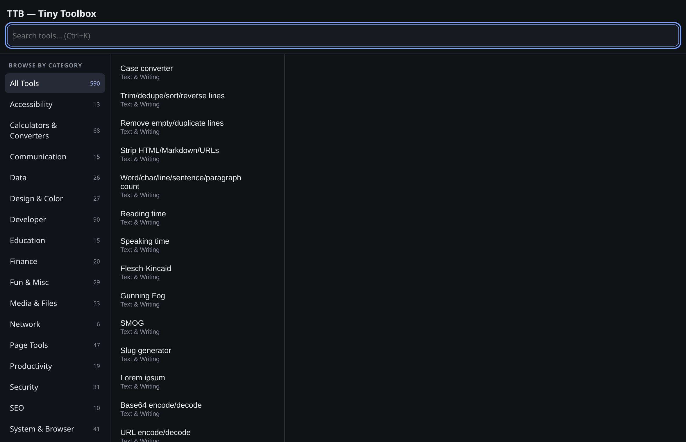
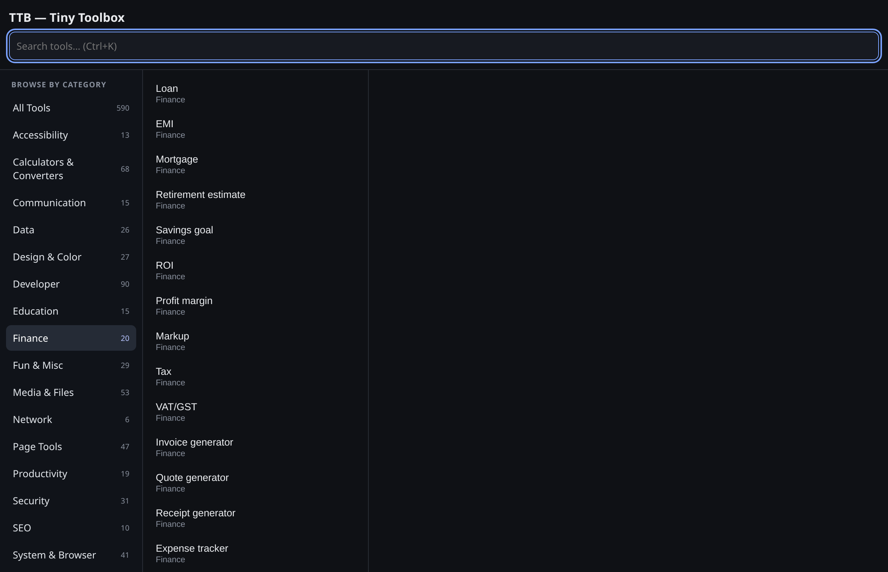
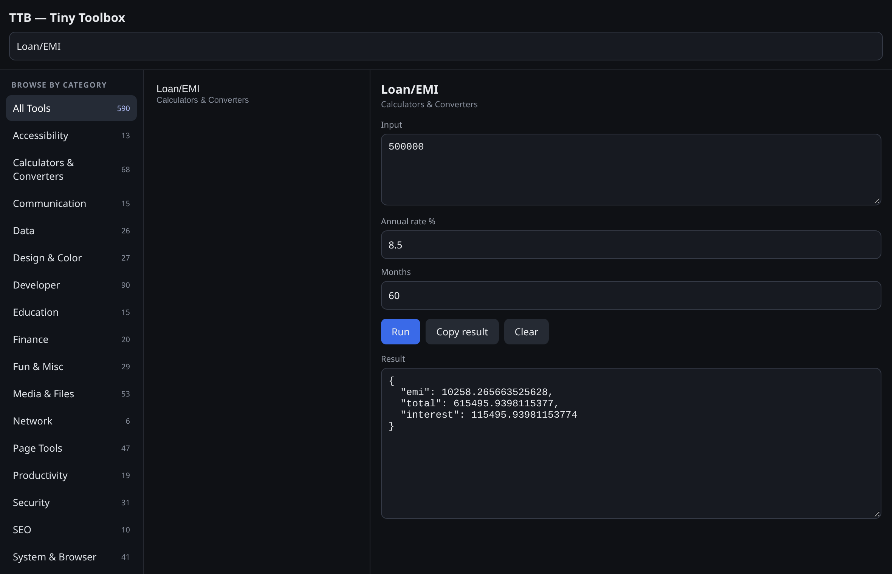
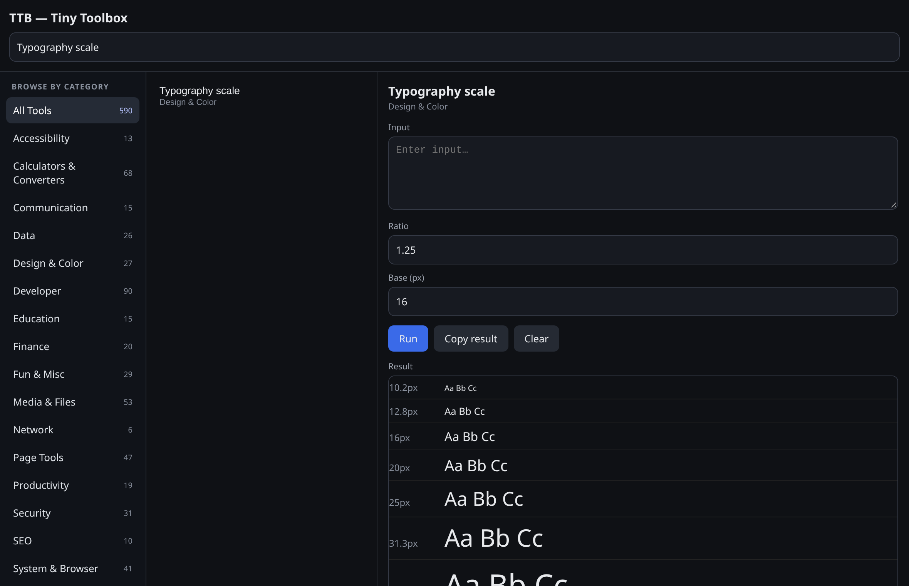
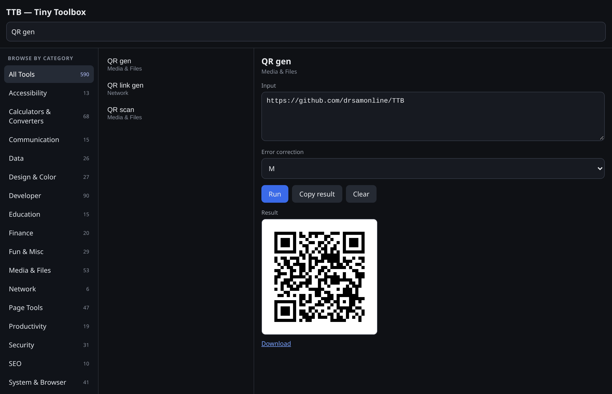
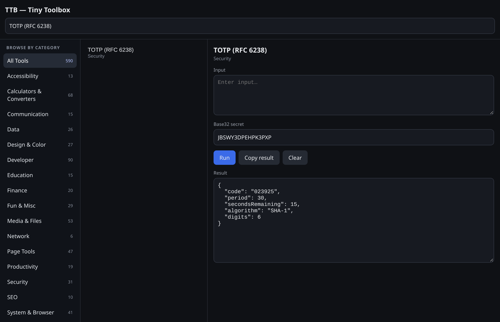
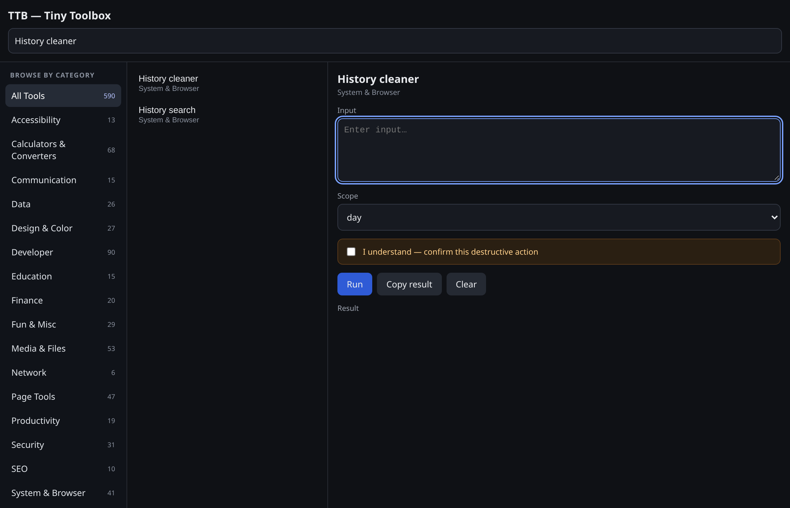

590 tools, 18 categories
A real category browser — pick a category, see its count, then search within it. You don't need to know a tool's name to find it.
TTB (Tiny Toolbox) gathers a large collection of small utilities — text, calculations, developer helpers, page tools, data, design, finance, media, security and accessibility — into one fast, offline-first interface, instead of a separate tab or extension for every small task. No framework, no telemetry, no remote code.


One popup, one catalog, no tabs to juggle — built to be read and trusted as much as it is used.
A real category browser — pick a category, see its count, then search within it. You don't need to know a tool's name to find it.
Replace a separate tab, site or extension for every small task. Everything runs from the popup or the side panel, from a single install.
There is no network layer in the extension. Nothing is fetched, phoned home, or loaded remotely — your inputs stay on your machine.
Text lands in a copyable box; HTML results (markdown previews, palettes, CSS generators, charts) render in a sandboxed preview; images render inline with a download link.
History, cookie and cache cleaners, duplicate-tab closing and auto-close are dry-run by default — they only act after you tick an explicit confirmation.
One source tree, assembled per browser. A tool that needs an API a browser doesn't expose is disabled and says so plainly — instead of failing silently.
From toolbar to result in five steps. No setup, no account, no network round-trip.
Click the toolbar icon or press Alt+Shift+T. Open the side panel with Alt+Shift+K.
Filter by category on the left, or type in the search box — Ctrl+K focuses it.
The panel shows the fields that tool needs: a main input, plus any extra values, switches or file pickers.
Press Run or Ctrl+Enter. Execution is imported on demand — the catalog renders even if a handler fails.
Copy the result, or download it for image and file tools. Everything stays local.
popup.html / sidebar.html ├─ data/tools.js → globalThis.TTB_CATALOG (590 entries) └─ ui/app.js → renders the catalog, builds inputs, runs tools └─ (on first Run) tools/core.js → dispatcher ├─ text · calc · dev · page · system · security (core handlers) ├─ phase4–7 + t-*.js (bundled modules) ├─ tools/compat.js (namespace + capability layer) └─ ui/registry.js (name → handler, inputs) background.js → context menu + keyboard commands only build.mjs + browsers/*.json → per-browser packages (dist/chrome, edge, firefox, safari)
The catalog is separated from execution, so the tool list renders even if a handler or a privileged API fails. Tool execution is imported on demand, and tools/compat.js is the only place that knows about browser differences.
Every image below was captured from the real extension UI in headless Chrome.







No build step is required to load the extension — the repository root is a working Chromium extension.
# produce dist/chrome, edge, firefox, safari npm run build # Firefox: load dist/firefox/manifest.json # via about:debugging#/runtime/this-firefox npm run build:firefox # Safari: convert the package with Xcode npm run build:safari
Prebuilt ZIPs for every browser are attached to each successful CI run (Actions → Validate → Artifacts). Requirements: Chrome 127+, Edge 127+, Firefox 121+, Safari 16.4+.
Straight answers, including the limitations.